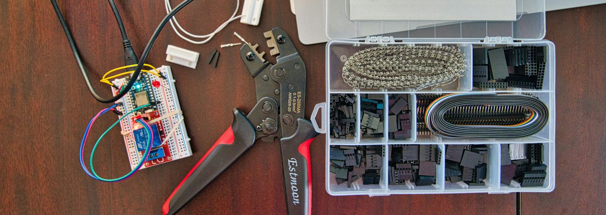
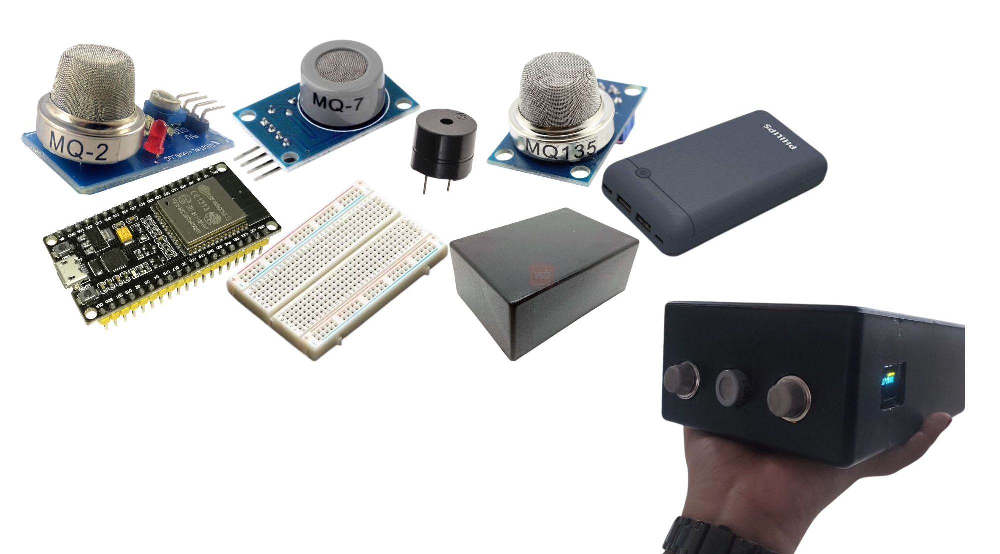
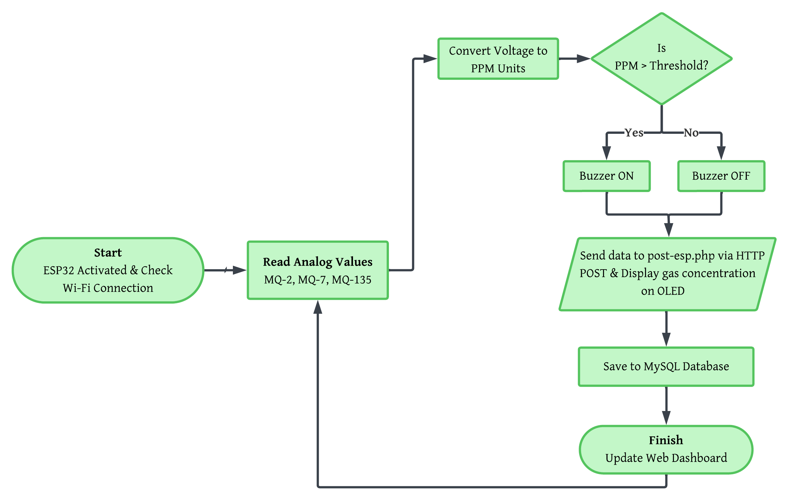
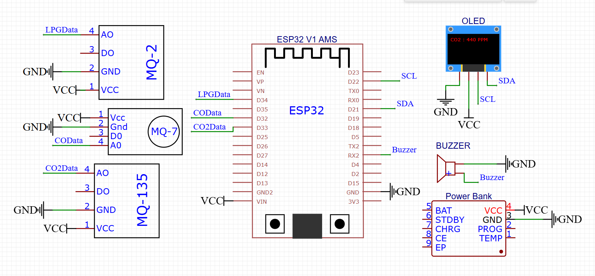
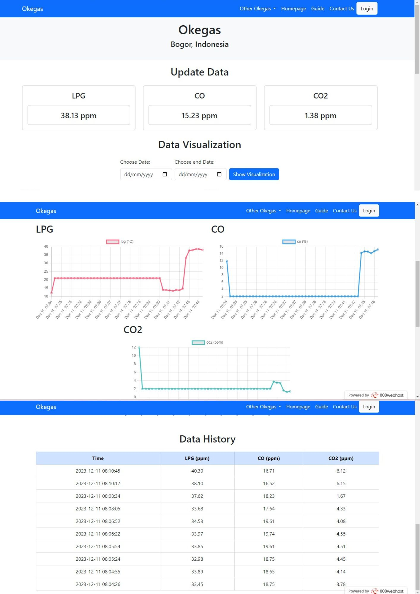

IoT-Based Hazardous Gas Detector
Overview
Developed a real-time IoT-based hazardous gas detection system to monitor indoor air quality and prevent accidents caused by invisible gas leaks. The system integrates hardware prototyping and web development to create a reliable safety device, using MQ-Series sensors to continuously detect flammable and toxic gases. When gas levels exceed predefined safety thresholds, the microcontroller automatically triggers a local alarm (buzzer) and sends real-time data to a web dashboard, enabling remote monitoring.
Background
The development of this IoT-based gas monitoring system is driven by the high risk of accidents in kitchen areas caused by flammable LPG leaks, as well as the dangers of air pollution from CO and CO2 gases resulting from incomplete combustion, which often go undetected by human senses. The use of the ESP32 microcontroller serves as a relevant technological solution due to its ability to integrate various sensors with Wi-Fi networks, enabling a real-time early warning system. With this IoT integration, homeowners can monitor air quality and kitchen safety remotely through precise data updates, ultimately aiming to minimize fire risks and the negative health impacts of toxic gases on residents.

Components used and product prototypes.
Flowchart & Wiring Diagram
The IoT-based LPG, CO, and CO2 gas sensor system is constructed using three gas sensors: the MQ-2, MQ-7, and MQ-135. These sensors are connected to an ESP32 Wi-Fi module, which is then connected to the internet. The MQ-2 sensor is used to detect LPG, the MQ-7 sensor is used to detect CO, and the MQ-135 sensor is used to detect CO2. The data generated by these sensors is processed by the ESP32 microcontroller, enabling detection and monitoring of gas concentrations exceeding threshold values over the internet. This monitoring system provides information regarding the type of gas detected, the gas concentration, and the time of detection.

Flowchart of IoT Gas Detector Systems.

The complete wiring diagram showcasing the integration between ESP32, MQ-Series sensors, OLED display, and the power management system.
Web Integration
The Okegas IoT system operates through an integrated workflow starting at the perception layer, where the MQ-2, MQ-7, and MQ-135 sensors detect gas molecules and transmit analog signals to the ESP32. Within the microcontroller, this data is converted into PPM units using exponential regression methods, displayed on an OLED screen, and checked against a threshold to trigger a local buzzer alarm if a leak is detected. The ESP32 then acts as a transmitter, sending data in real time over a Wi-Fi network via HTTP POST to a server.
At the application layer, a server-side script receives data from the ESP32, performs security validation using an API key, and stores it in a MySQL database. Users can monitor environmental conditions through a web dashboard, which automatically retrieves the latest data from the database and presents it in numerical panels and interactive graphs using the Chart.js library. This system enables the tracking of historical gas data, providing early warning and comprehensive remote air quality management.

The website 'Okegas' focuses on monitoring gas concentrations. Although the name was inspired by viral trends in 2023, this project was developed independently and has no affiliation with any presidential candidate or political campaign.
Methodology & Frameworks
Hardware Prototyping
Designed circuit architecture combining a Wi-Fi-enabled microcontroller with MQ-series analog sensors for accurate environmental data acquisition. Applied principles from the Sensors & Transducers course to calibrate the MQ-series sensors for improved data accuracy.
IoT Ecosystem & Cloud Integration
Developed an IoT infrastructure using C++ (Arduino IDE) to interface hardware with MySQL and PHP. Implemented HTTP POST protocols for real-time data ingestion, enabling live data visualization through Chart.js and automated threshold-based alert systems.
Key Impact
Provides an automated, early-warning mechanism that significantly can enhance workplace and residential safety, demonstrating the practical application of electronics and IoT technology in mitigating critical environmental hazards.
Project Resources
The complete source code for the hardware integration (ESP32) and the web-based monitoring dashboard is available on my GitHub repository.
Project Context & Collaboration
This IoT system was developed as a core project for the Internet-Based Instrumentation Systems and Sensors & Transducers courses at Physics Department IPB University.
Working in a team of 5 members, I was responsible for the end-to-end hardware-to-web integration. To ensure efficient data handling, I collaborated with a peer from the Computer Science department to learn and implement robust HTTP POST methods and secure database communication.
My Personal Technical Contributions:
- Hardware Assembly & Documentation: Executed the physical circuit assembly and re-constructed the technical wiring diagrams to ensure accurate project documentation.
- Web Development & Backend Integration: Developed a comprehensive monitoring system using the LAMP stack (Linux, Apache, MySQL, PHP), implementing HTTP POST methods to bridge the gap between IoT hardware and a centralized database for real-time data visualization.
- Data Integration: Implemented real-time data transmission protocols from hardware to cloud.